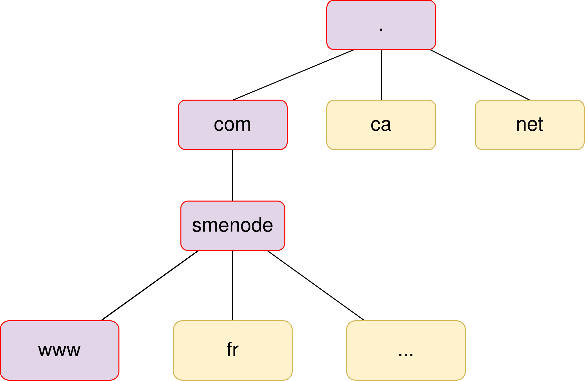

Kali Linux as a DNS Client
Domain Name Service (DNS)
As we covered in our networking course here, in order to send your message to a destination over a routed infrastructure, you need to encapsulate your message into a TCP/IP Layer-3 header. We have also covered that headers include source and destination addresses. In case of Layer-3 with TCP/IP model, we have two different protocols: IP and IPv6.
Nevertheless, in order to send your message to a destination, you must know the destination IP address - Analogous to a phone number when you want to contact someone over the phone. With this analogy, you will have a problem of memorizing the phone numbers as they increase. Traditionally, you could map a phone number with a friendly name of your friend into a phone book - then when needed, you could only dial your friend’s name. You do not necessarily need to memorize your friend’s name along with their phone numbers. Not, only you do not need to memorize your friend’s phone number, but you do not even need to memorize your friend’s parent names. You could simply refer to parent.friend1 and map it to a phone number.
With Layer-3 routed addressing, this is a job of Domain Name System (DNS) to resolve the user-friendly name into IP addresses.
Fully-Qualified Domain Name (FQDN)
The friendly names in this system structured as a fully-qualified domain name (or FQDN). An FQDN looks like www.smenode.com.
As you can see above the name itself is also hierarchical. The top of the hierarchy starts from most right and it terminates to the far left. Here are different zones you can see in an FQDN
- The root zone: with www.smenode.com. and all other FQDNs you have a period
.and if you miss it the application appends that period for you. - Top-Level Domain: TLD comes under the root zone. with
www.smenode.com..comis the TLD zone. - Second-Level Domain: SLD is subdomain of the TLD above it. With our example,
.smenodeis the TLD. - Then comes the subdomain or third-level domain and this hierarchy may extend to other levels. In our
www.smenode.com.example we ended up with the actual host which iswww

How the Domain Name System hierarchy works
Let us go back pone more time to our phone system analogy, then we will come back to DNS topic. What if even you did not need to spend some time and add your friend’s name to your phonebook? What if we had a hierarchical structure (for scalability) wherefrom we could ask our friend’s name; then we could get the response from someone (an authoritative nameserver in DNS terminology) who had my friend’s name in his book (zone in DNS terminology), then our phone could store (cache) the phone number for a certain amount of time (Time to live or TTL).
DNS has a hierarchical structure which is divided into several zones, starting with top level zone.
Here is how DNS works.
- Client checks its cache; if it could resolve the name to the IP address, then voila and end.
- Note that in addition to the operating DNS client host file and/or cache, some applications such as web browsers keep a separate DNS cache
- If process did not terminate in aforementioned step, then client asks an external DNS server as (DNS server is configured along with other IP parameters you configure by any mean on the operating system network interface card). If DNS server has had the answer, then voila - end. Otherwise continue to the next step.
- This server in the chain is called the DNS recursor. It is the recursor, because the DNS client expects the result from this server. The DNS recursor does not refer the client to another server.
- The DNS recursor asks one of the servers in the DNS root zone. The root server then responds with the address of the server responsible for the TLD zone. In our example the
.comTLD. - The DNS recursor then queries the TLD DNS server for the authoritative nameserver for
old.smenode.comdomain. The authoritative nameserver is the final step in the DNS lookup process and contains the DNS records in a local database known as the zone file. - Finally, once the DNS recursor has the DNS response from the authoritative nameserver, it provides the client with the IP. DNS recursor may also cache the entry for the duration of the TTL value.
The authoritative nameserver typically hosts two zones for each domain:
- Forward Lookup Zone: used for name to IP resolution (name -> IP)
- Reverse Lookup Zone: used to find the name of a specific IP (IP -> name)
DNS Records
So far we have learned DNS can provide us with the IP address of the destination host. That IP address is called an A record or a host record on the DNS server. Each domain can use different types of DNS records. Most common types of DNS records are:
- A - As known as a host record. It contains the IPv4 address of the hostname.
- AAAA - Same as A record but for IPv6
- PTR - Pointer Records are used in reverse lookup zones and are used to find the records associated with an IP address.
- NS - Contains the name of the authoritative servers hosting the DNS record for a domain
- CNAME - Used to create aliases for other host records.
- TXT - Text records can contain any arbitrary data and can be used for various purposes, such as domain ownership verification.
- SOA - Start of Authority (SOA) records provide authoritative information about the domain and the server
nslookup
The command nslookup exists on Windows Operating Systems and also most GNU/Linux distros. You can query Internet domain name servers. When no arguments are given the default name server is used.
┌──(kali㉿kali-1)-[~] └─$ nslookup www.smenode.com Server: 10.0.0.1 Address: 10.0.0.1#53 Non-authoritative answer: Name: www.smenode.com Address: 104.21.82.102 Name: www.smenode.com Address: 172.67.200.40 Name: www.smenode.com Address: 2606:4700:3032::6815:5266 Name: www.smenode.com Address: 2606:4700:3030::ac43:c828
host
host is a another utility for performing DNS lookups. It is normally used to convert names to IP addresses and vice versa. When no arguments or options are given, host prints a short summary of its command-line arguments and options.
┌──(kali㉿kali-1)-[~] └─$ host www.smenode.com www.smenode.com has address 104.21.82.102 www.smenode.com has address 172.67.200.40 www.smenode.com has IPv6 address 2606:4700:3032::6815:5266 www.smenode.com has IPv6 address 2606:4700:3030::ac43:c828
We can query other records with switch -t, for example:
┌──(kali㉿kali-1)-[~] └─$ host -t A www.smenode.com www.smenode.com has address 172.67.200.40 www.smenode.com has address 104.21.82.102
dig
dig is yet another and very flexible tool for interrogating DNS name servers. Most DNS administrators use dig to troubleshoot DNS problems because of its flexibility, ease of use, and clarity of output.
┌──(kali㉿kali-1)-[~] └─$ dig www.smenode.com ; <<>> DiG 9.18.0-2-Debian <<>> www.smenode.com ;; global options: +cmd ;; Got answer: ;; ->>HEADER<<- opcode: QUERY, status: NOERROR, id: 48531 ;; flags: qr rd ra; QUERY: 1, ANSWER: 2, AUTHORITY: 13, ADDITIONAL: 1 ;; QUESTION SECTION: ;www.smenode.com. IN A ;; ANSWER SECTION: www.smenode.com. 199 IN A 172.67.200.40 www.smenode.com. 199 IN A 104.21.82.102 ;; AUTHORITY SECTION: com. 3955 IN NS m.gtld-servers.net. com. 3955 IN NS c.gtld-servers.net. com. 3955 IN NS k.gtld-servers.net. com. 3955 IN NS a.gtld-servers.net. com. 3955 IN NS g.gtld-servers.net. com. 3955 IN NS b.gtld-servers.net. com. 3955 IN NS l.gtld-servers.net. com. 3955 IN NS f.gtld-servers.net. com. 3955 IN NS e.gtld-servers.net. com. 3955 IN NS j.gtld-servers.net. com. 3955 IN NS d.gtld-servers.net. com. 3955 IN NS i.gtld-servers.net. com. 3955 IN NS h.gtld-servers.net. ;; ADDITIONAL SECTION: j.gtld-servers.net. 16830 IN A 192.48.79.30 ;; Query time: 0 msec ;; SERVER: 10.0.0.1#53(10.0.0.1) (UDP) ;; WHEN: Wed Apr 20 22:48:34 EDT 2022 ;; MSG SIZE rcvd: 305
DNS Zone Transfer
A zone transfer is basically a database replication between related DNS servers in which the zone file is copied from a master DNS server to a slave server. AXFR protocol is the protocol which replicates all DNS records from the DNS server to the slave server. If we want only the change, we can use IXFR protocol.
Let us attempt a zone transfer with host -l (list zone) command. The syntax is host -l <domain name> <dns sever address>
┌──(kali㉿kali-1)-[~] └─$ host -la www.somenode.com j.gtld-servers.net Using domain server: Name: j.gtld-servers.net Address: 192.48.79.30#53 Aliases: Host www.somenode.com not found: 5(REFUSED) ; Transfer failed.
Although a successful zone transfer by a hacker does not directly result in a network breach, but it facilitates the process.
Fortunately, zone transfer for www.somenode.com failed. It looks like the nameserver j.gtld-servers.net does not allow the DNS zone transfer. Now, let us try zonetransfer.me domain. First we need to get the list of authoritative nameservers for that domain. Then we perform the zone transfer
┌──(kali㉿kali-1)-[~] └─$ dig zonetransfer.me ; <<>> DiG 9.18.0-2-Debian <<>> zonetransfer.me ;; global options: +cmd ;; Got answer: ;; ->>HEADER<<- opcode: QUERY, status: NOERROR, id: 26911 ;; flags: qr rd ra; QUERY: 1, ANSWER: 1, AUTHORITY: 2, ADDITIONAL: 0 ;; QUESTION SECTION: ;zonetransfer.me. IN A ;; ANSWER SECTION: zonetransfer.me. 7200 IN A 5.196.105.14 ;; AUTHORITY SECTION: zonetransfer.me. 7067 IN NS nsztm2.digi.ninja. zonetransfer.me. 7067 IN NS nsztm1.digi.ninja. ;; Query time: 32 msec ;; SERVER: 10.0.0.1#53(10.0.0.1) (UDP) ;; WHEN: Wed Apr 20 23:07:29 EDT 2022 ;; MSG SIZE rcvd: 101
Let us now try zone transfer with our host -l command:
┌──(kali㉿kali-1)-[~] └─$ host -la zonetransfer.me nsztm2.digi.ninja Trying "zonetransfer.me" Using domain server: Name: nsztm2.digi.ninja Address: 34.225.33.2#53 Aliases: ;; ->>HEADER<<- opcode: QUERY, status: NOERROR, id: 10340 ;; flags: qr aa; QUERY: 1, ANSWER: 51, AUTHORITY: 0, ADDITIONAL: 0 ;; QUESTION SECTION: ;zonetransfer.me. IN AXFR ;; ANSWER SECTION: zonetransfer.me. 7200 IN SOA nsztm1.digi.ninja. robin.digi.ninja. 2019100801 172800 900 1209600 3600 zonetransfer.me. 300 IN HINFO "Casio fx-700G" "Windows XP" zonetransfer.me. 301 IN TXT "google-site-verification=tyP28J7JAUHA9fw2sHXMgcCC0I6XBmmoVi04VlMewxA" zonetransfer.me. 7200 IN MX 0 ASPMX.L.GOOGLE.COM. zonetransfer.me. 7200 IN MX 10 ALT1.ASPMX.L.GOOGLE.COM. zonetransfer.me. 7200 IN MX 10 ALT2.ASPMX.L.GOOGLE.COM. zonetransfer.me. 7200 IN MX 20 ASPMX2.GOOGLEMAIL.COM. zonetransfer.me. 7200 IN MX 20 ASPMX3.GOOGLEMAIL.COM. zonetransfer.me. 7200 IN MX 20 ASPMX4.GOOGLEMAIL.COM. zonetransfer.me. 7200 IN MX 20 ASPMX5.GOOGLEMAIL.COM. zonetransfer.me. 7200 IN A 5.196.105.14 zonetransfer.me. 7200 IN NS nsztm1.digi.ninja. zonetransfer.me. 7200 IN NS nsztm2.digi.ninja. _acme-challenge.zonetransfer.me. 301 IN TXT "2acOp15rSxBpyF6L7TqnAoW8aI0vqMU5kpXQW7q4egc" _acme-challenge.zonetransfer.me. 301 IN TXT "6Oa05hbUJ9xSsvYy7pApQvwCUSSGgxvrbdizjePEsZI" _sip._tcp.zonetransfer.me. 14000 IN SRV 0 0 5060 www.zonetransfer.me. 14.105.196.5.IN-ADDR.ARPA.zonetransfer.me. 7200 IN PTR www.zonetransfer.me. asfdbauthdns.zonetransfer.me. 7900 IN AFSDB 1 asfdbbox.zonetransfer.me. asfdbbox.zonetransfer.me. 7200 IN A 127.0.0.1 asfdbvolume.zonetransfer.me. 7800 IN AFSDB 1 asfdbbox.zonetransfer.me. canberra-office.zonetransfer.me. 7200 IN A 202.14.81.230 cmdexec.zonetransfer.me. 300 IN TXT "; ls" contact.zonetransfer.me. 2592000 IN TXT "Remember to call or email Pippa on +44 123 4567890 or pippa@zonetransfer.me when making DNS changes" dc-office.zonetransfer.me. 7200 IN A 143.228.181.132 deadbeef.zonetransfer.me. 7201 IN AAAA dead:beaf:: dr.zonetransfer.me. 300 IN LOC 53 20 56.558 N 1 38 33.526 W 0.00m 1m 10000m 10m DZC.zonetransfer.me. 7200 IN TXT "AbCdEfG" email.zonetransfer.me. 2222 IN NAPTR 1 1 "P" "E2U+email" "" email.zonetransfer.me.zonetransfer.me. email.zonetransfer.me. 7200 IN A 74.125.206.26 Hello.zonetransfer.me. 7200 IN TXT "Hi to Josh and all his class" home.zonetransfer.me. 7200 IN A 127.0.0.1 Info.zonetransfer.me. 7200 IN TXT "ZoneTransfer.me service provided by Robin Wood - robin@digi.ninja. See http://digi.ninja/projects/zonetransferme.php for more information." internal.zonetransfer.me. 300 IN NS intns1.zonetransfer.me. internal.zonetransfer.me. 300 IN NS intns2.zonetransfer.me. intns1.zonetransfer.me. 300 IN A 81.4.108.41 intns2.zonetransfer.me. 300 IN A 52.91.28.78 office.zonetransfer.me. 7200 IN A 4.23.39.254 ipv6actnow.org.zonetransfer.me. 7200 IN AAAA 2001:67c:2e8:11::c100:1332 owa.zonetransfer.me. 7200 IN A 207.46.197.32 robinwood.zonetransfer.me. 302 IN TXT "Robin Wood" rp.zonetransfer.me. 321 IN RP robin.zonetransfer.me. robinwood.zonetransfer.me. sip.zonetransfer.me. 3333 IN NAPTR 2 3 "P" "E2U+sip" "!^.*$!sip:customer-service@zonetransfer.me!" . sqli.zonetransfer.me. 300 IN TXT "' or 1=1 --" sshock.zonetransfer.me. 7200 IN TXT "() { :]}; echo ShellShocked" staging.zonetransfer.me. 7200 IN CNAME www.sydneyoperahouse.com. alltcpportsopen.firewall.test.zonetransfer.me. 301 IN A 127.0.0.1 testing.zonetransfer.me. 301 IN CNAME www.zonetransfer.me. vpn.zonetransfer.me. 4000 IN A 174.36.59.154 www.zonetransfer.me. 7200 IN A 5.196.105.14 xss.zonetransfer.me. 300 IN TXT "'><script>alert('Boo')</script>" zonetransfer.me. 7200 IN SOA nsztm1.digi.ninja. robin.digi.ninja. 2019100801 172800 900 1209600 3600 Received 2102 bytes from 34.225.33.2#53 in 36 ms
You can also perform the Zone transfer with dig command:
┌──(kali㉿kali-1)-[~] └─$ dig axfr zonetransfer.me @nsztm1.digi.ninja. ; <<>> DiG 9.18.0-2-Debian <<>> axfr zonetransfer.me @nsztm1.digi.ninja. ;; global options: +cmd zonetransfer.me. 7200 IN SOA nsztm1.digi.ninja. robin.digi.ninja. 2019100801 172800 900 1209600 3600 zonetransfer.me. 300 IN HINFO "Casio fx-700G" "Windows XP" zonetransfer.me. 301 IN TXT "google-site-verification=tyP28J7JAUHA9fw2sHXMgcCC0I6XBmmoVi04VlMewxA" zonetransfer.me. 7200 IN MX 0 ASPMX.L.GOOGLE.COM. zonetransfer.me. 7200 IN MX 10 ALT1.ASPMX.L.GOOGLE.COM. zonetransfer.me. 7200 IN MX 10 ALT2.ASPMX.L.GOOGLE.COM. zonetransfer.me. 7200 IN MX 20 ASPMX2.GOOGLEMAIL.COM. zonetransfer.me. 7200 IN MX 20 ASPMX3.GOOGLEMAIL.COM. zonetransfer.me. 7200 IN MX 20 ASPMX4.GOOGLEMAIL.COM. zonetransfer.me. 7200 IN MX 20 ASPMX5.GOOGLEMAIL.COM. zonetransfer.me. 7200 IN A 5.196.105.14 zonetransfer.me. 7200 IN NS nsztm1.digi.ninja. zonetransfer.me. 7200 IN NS nsztm2.digi.ninja. _acme-challenge.zonetransfer.me. 301 IN TXT "6Oa05hbUJ9xSsvYy7pApQvwCUSSGgxvrbdizjePEsZI" _sip._tcp.zonetransfer.me. 14000 IN SRV 0 0 5060 www.zonetransfer.me. 14.105.196.5.IN-ADDR.ARPA.zonetransfer.me. 7200 IN PTR www.zonetransfer.me. asfdbauthdns.zonetransfer.me. 7900 IN AFSDB 1 asfdbbox.zonetransfer.me. asfdbbox.zonetransfer.me. 7200 IN A 127.0.0.1 asfdbvolume.zonetransfer.me. 7800 IN AFSDB 1 asfdbbox.zonetransfer.me. canberra-office.zonetransfer.me. 7200 IN A 202.14.81.230 cmdexec.zonetransfer.me. 300 IN TXT "; ls" contact.zonetransfer.me. 2592000 IN TXT "Remember to call or email Pippa on +44 123 4567890 or pippa@zonetransfer.me when making DNS changes" dc-office.zonetransfer.me. 7200 IN A 143.228.181.132 deadbeef.zonetransfer.me. 7201 IN AAAA dead:beaf:: dr.zonetransfer.me. 300 IN LOC 53 20 56.558 N 1 38 33.526 W 0.00m 1m 10000m 10m DZC.zonetransfer.me. 7200 IN TXT "AbCdEfG" email.zonetransfer.me. 2222 IN NAPTR 1 1 "P" "E2U+email" "" email.zonetransfer.me.zonetransfer.me. email.zonetransfer.me. 7200 IN A 74.125.206.26 Hello.zonetransfer.me. 7200 IN TXT "Hi to Josh and all his class" home.zonetransfer.me. 7200 IN A 127.0.0.1 Info.zonetransfer.me. 7200 IN TXT "ZoneTransfer.me service provided by Robin Wood - robin@digi.ninja. See http://digi.ninja/projects/zonetransferme.php for more information." internal.zonetransfer.me. 300 IN NS intns1.zonetransfer.me. internal.zonetransfer.me. 300 IN NS intns2.zonetransfer.me. intns1.zonetransfer.me. 300 IN A 81.4.108.41 intns2.zonetransfer.me. 300 IN A 167.88.42.94 office.zonetransfer.me. 7200 IN A 4.23.39.254 ipv6actnow.org.zonetransfer.me. 7200 IN AAAA 2001:67c:2e8:11::c100:1332 owa.zonetransfer.me. 7200 IN A 207.46.197.32 robinwood.zonetransfer.me. 302 IN TXT "Robin Wood" rp.zonetransfer.me. 321 IN RP robin.zonetransfer.me. robinwood.zonetransfer.me. sip.zonetransfer.me. 3333 IN NAPTR 2 3 "P" "E2U+sip" "!^.*$!sip:customer-service@zonetransfer.me!" . sqli.zonetransfer.me. 300 IN TXT "' or 1=1 --" sshock.zonetransfer.me. 7200 IN TXT "() { :]}; echo ShellShocked" staging.zonetransfer.me. 7200 IN CNAME www.sydneyoperahouse.com. alltcpportsopen.firewall.test.zonetransfer.me. 301 IN A 127.0.0.1 testing.zonetransfer.me. 301 IN CNAME www.zonetransfer.me. vpn.zonetransfer.me. 4000 IN A 174.36.59.154 www.zonetransfer.me. 7200 IN A 5.196.105.14 xss.zonetransfer.me. 300 IN TXT "'><script>alert('Boo')</script>" zonetransfer.me. 7200 IN SOA nsztm1.digi.ninja. robin.digi.ninja. 2019100801 172800 900 1209600 3600 ;; Query time: 96 msec ;; SERVER: 81.4.108.41#53(nsztm1.digi.ninja.) (TCP) ;; WHEN: Wed Apr 20 23:16:57 EDT 2022 ;; XFR size: 50 records (messages 1, bytes 1994)